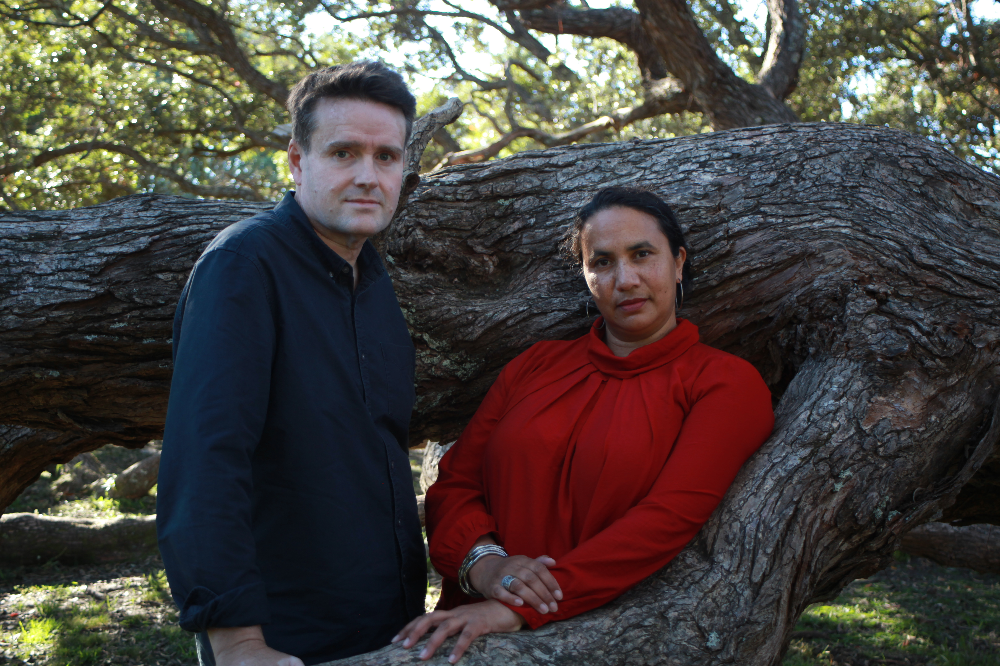

Artist information · SAJA Project
Press Kit.

About SAJA Project
Artist biographySAJA project is the collaborative creative powerhouse between Jamie Gabriel (Aus) and Sally Jamila (NZ). Their contrasting and highly diverse musical backgrounds, spanning classical to electronica and Indian to jazz-fusion, enrich their music with constant innovation and surprising discoveries.
Rather than settling into a single genre, their music thrives at the point where their influences intersect. Each project is shaped by their own creative impulses to explore new territory, allowing the music to evolve in unexpected directions.
Sally Jamila’s warm, intimate and understated performance style, rich tonal colours and resonant mid-range, together with Jamie Gabriel’s unique ability to fuse musical styles across centuries and cultures, brings together modern jazz, classical traditions, Eastern influences and experimental sounds. They bring expressive depth to their music, weaving lush vocal layers, looping and improvisation into an immersive alchemy of sonic landscapes.
SAJA Project 01 is their debut studio album, written, recorded and produced in New Zealand and Australia over a two year period. The album’s seven original songs span layered, evocative soundscapes, psychedelic jazz and cinematic grooves. Rich harmonies, at times reminiscent of the late Romantic period, meet touches of noise and dissonance for dark spiciness. Ranging from the introspective calm and atmospheric slow-burn of La Valse to the driving energy of A Little Motion, each song invites the listener to discover yet another side of SAJA Project. Their style has been described as, “Debussy meeting Jean-Michel Jarre on Broadway”.
Press photographs
Selected images · click to view full sizeImages are currently placeholders. Replace the files with final approved press photographs, retaining the same filenames.
Stage requirements
Technical information for presenters, venues and production teams, including performance setup and stage requirements.